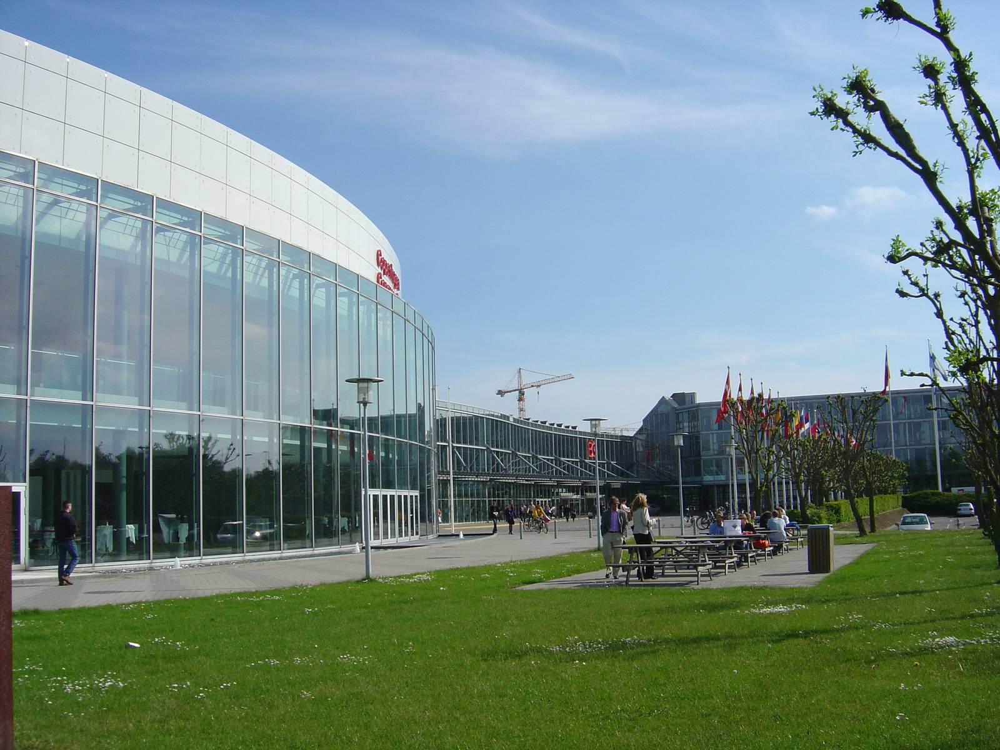
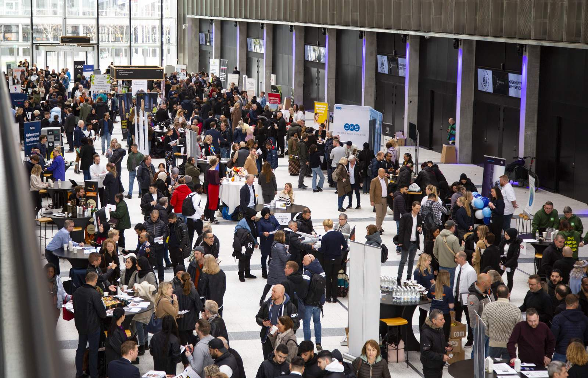

Venue · Convention centre
Bella Center Copenhagen
- Type
- Convention centre
- Location
- Copenhagen, Denmark
- Address
- Center Boulevard 5, 2300 Copenhagen
- Capacity
- 30,000 capacity
- Exhibition space
- 42,300 m²
- Halls
- Halls A–E and 48 permanent meeting rooms (official copy also says 100 meeting rooms can be made available)
- Official website
- https://bellacenter.dk/en
About
Copenhagen convention and exhibition centre officially at Center Boulevard 5, 2300 Copenhagen. Official copy gives up to 30,000 guests, stored as capacity_max_delegates, and 65,000 square metres of flexible event space, which is not stored as exhibition_sqm because it is not labelled as indoor exhibition area alone. Official hall areas for Halls A–E are 3,500, 12,500, 14,000, 7,000 (Bella Arena) and 5,300 sqm; those five halls sum to 42,300 sqm, stored as exhibition_sqm. Coordinates are the atlas precise pin for TechBBQ at the centre; the BogForum atlas pin sits slightly to the west on the same campus.
Spaces
| Name | Type | Capacity | Area |
|---|---|---|---|
| Hall A | — | — | 3,500 m² |
| Hall B | — | 6,100 | 12,500 m² |
| Hall C | — | 8,000 | 14,000 m² |
| Hall D (Bella Arena) | — | 8,600 | 7,000 m² |
| Hall E | — | 2,500 | 5,300 m² |
Official documents
Upcoming events
Sources
- Official source — https://bellacenter.dk/en
- Official source — https://bellacenter.dk/en/contact
- Official source — https://bellacenter.dk/media/0jwfcitg/bcc_capacitychart_web_1905_2025.pdf